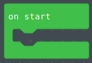
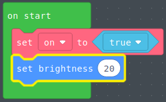

Getting Started
-
Start by adding an
on startcode block
-
Make a variabe in the variable tab to the left hand side name it
on. After doing so add this code into theon start, shown below.
-
Add a
set brightnesscommand under theset on to trueparameter